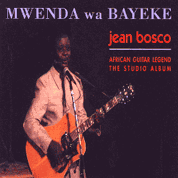
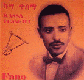
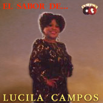

Чертова дюжина... Хороший повод поговорить о звездах, которых по некоторым причинам мировая слава обошла стороной. И для начала четверо: уже ушедшие от нас заирский «master of dry guitar» Jean 'Bosco' Mwenda и эфиопский бард, виртуоз krar Kassa Tessema, потрясающая перуанская певица Lucila Campos и восходящая гвинейская звезда Diaou Kouyate. О них мало, что известно, но те редкие песни, которые можно услышать, не дают себя забыть.
Ранние записи Mwenda, особенно ставшая классической инструментальная композиция "Masanga", послужили источником вдохновения для многих западных музыкантов, саксофонист Marion Brown аранжировал несколько его мелодий для джазового ансамбля. Сохранился документальный фильм - African Guitar-Solo Fingerstyle Guitar Music From Uganda, Congo/Zaire, Central African Republics, Malawi, Namibia And Zambia, - снятый антропологом Gerhard Kubik и южно-африканским музыковедом High Tracey в начале 60х, в котором запечатлено исполнение Mwenda пяти своих песен.
Редкий концерт 1982 в берлинском Museum for Volkerkunde послужил основой замечательного альбома Mwenda Jean Bosco: Songs With Guitar (Shaba/Zaire). В 1988 Jean 'Bosco' работал над новым альбомом в Capetown, Южная Африка. Однако вскоре после этого автомобильная авария оборвала едва начавшееся новое восхождение к славе. Альбом Mwenda Wa Bayeke, собранный из записей последней сессии, был издан в 1995 фирмой Rounder.
Одну из самых незабываемых песен "Elem Ale Baburu" он сочинил во время II Мировой Войны, когда принимал участие в войне в Корее. Песня была посвящена солдатам, карабкающимся на борт корабля души...
На родине Kassa Tessema до сих пор остается одним из самых популярных исполнителей, его песни переиздаются на кассетах и компактах и представлены на главных сайтах, посвященных музыке Эфиопии. Одна их таких кассет, привезенная эфиопскими студентами, стала первым кирпичиком в строительстве проекта The Ethno Trip ...
Возможно проблема в грамотном продюсере - недавно выпущенному альбому Musica Negra del Peru при участии Oscar Aviles, Lucila Campos и Zambo Cavero явно не хватает точно расставленных акцентов.
Певица уникального тембра Diaou Kouyate - дочь прославленного гвинейского griot Niama Macalou, с которым она с раннего детства выступала на концертах. Повзрослев Diaou в течении пяти лет была участницей концертного состава известного гвинейского мастера игры на kora Mory Kanté (ее голос можно услышать на альбоме Un Amour de Prix, 1997).
В 1998 на небольшом лэйбле Mi Corazon вышел ее первый сольный альбом - Doni Doni. Однако первой записью Diaou Kouyate, получившей определенную мировую известность, стала песня "Gafale/Я Тебе Говорила", включенная популярным этническим лэйблом Putumayo в сборник 1999 под незатейливым названием Africa. Совершенно потрясающая композиция, идеальный сплав восточных и африканских традиций в современной аранжировке. Певица в роли мистической провидицы призывала прислушаться к предсказаниям предков:


Пионер пальцевого звукоизвлечения в африканской традиции игры на акустической гитаре Jean 'Bosco' Mwenda был самым записываемым музыкантом континента в период с 1952 по 1962. Архивы хранят информацию о более, чем 150 записей, хотя реально сохранилось очень немногое. В 1960 по приглашению тогда культового Pete Seeger он принял участие в Newport Folk Festival. Mwenda выступал в качестве шоу поддержки и на знаменитом бое George Forman с Mohammad Ali "The Rumble In The Jungle", проходившем в 1974 в столице Заира, Киншасе.Ранние записи Mwenda, особенно ставшая классической инструментальная композиция "Masanga", послужили источником вдохновения для многих западных музыкантов, саксофонист Marion Brown аранжировал несколько его мелодий для джазового ансамбля. Сохранился документальный фильм - African Guitar-Solo Fingerstyle Guitar Music From Uganda, Congo/Zaire, Central African Republics, Malawi, Namibia And Zambia, - снятый антропологом Gerhard Kubik и южно-африканским музыковедом High Tracey в начале 60х, в котором запечатлено исполнение Mwenda пяти своих песен.
Редкий концерт 1982 в берлинском Museum for Volkerkunde послужил основой замечательного альбома Mwenda Jean Bosco: Songs With Guitar (Shaba/Zaire). В 1988 Jean 'Bosco' работал над новым альбомом в Capetown, Южная Африка. Однако вскоре после этого автомобильная авария оборвала едва начавшееся новое восхождение к славе. Альбом Mwenda Wa Bayeke, собранный из записей последней сессии, был издан в 1995 фирмой Rounder.

Kassa Tessema родился 14 февраля 1927 в провинции Shoa, Эфиопия. В 17 лет он вступил в военный оркестр и играл в нем до своей смерти 11 октября 1974. Kassa был одним из лучших исполнителей на krar своего времени и был широко известен своим потрясающим баритоном.Одну из самых незабываемых песен "Elem Ale Baburu" он сочинил во время II Мировой Войны, когда принимал участие в войне в Корее. Песня была посвящена солдатам, карабкающимся на борт корабля души...
На родине Kassa Tessema до сих пор остается одним из самых популярных исполнителей, его песни переиздаются на кассетах и компактах и представлены на главных сайтах, посвященных музыке Эфиопии. Одна их таких кассет, привезенная эфиопскими студентами, стала первым кирпичиком в строительстве проекта The Ethno Trip ...

Певица Lucila Maria de Souza Campos до сих пор выступает со своим ансамблем, в основном, по клубам Перу. Редким альбомам так и не удалось достучаться до мировой аудитории. Прорыв мог состояться с выходом спродюссированного David Byrne на его лэйбле LuAKA BoP великолепного сборника Afro-Peruvian Classics: The Soul of Black Peru. Но по совершенно непонятным мне причинам ее страстное исполнение двух классических песен-течений стиля афро-перу "Toro Mato" и "Samba Malato", ставших украшением альбома, прошло мимо ушей продюсеров всех крупных лэйблов world-music. Lucila так и осталась в тени другой великолепной певицы, собирательницы перуанского фольклора Susana Baca. А между тем они представляют такую потрясающую гармонию контрастного подхода к мелодиям - национальным иконам, - что искренне жаль, что только один подход приобрел широкую известность.Возможно проблема в грамотном продюсере - недавно выпущенному альбому Musica Negra del Peru при участии Oscar Aviles, Lucila Campos и Zambo Cavero явно не хватает точно расставленных акцентов.
Певица уникального тембра Diaou Kouyate - дочь прославленного гвинейского griot Niama Macalou, с которым она с раннего детства выступала на концертах. Повзрослев Diaou в течении пяти лет была участницей концертного состава известного гвинейского мастера игры на kora Mory Kanté (ее голос можно услышать на альбоме Un Amour de Prix, 1997).
В 1998 на небольшом лэйбле Mi Corazon вышел ее первый сольный альбом - Doni Doni. Однако первой записью Diaou Kouyate, получившей определенную мировую известность, стала песня "Gafale/Я Тебе Говорила", включенная популярным этническим лэйблом Putumayo в сборник 1999 под незатейливым названием Africa. Совершенно потрясающая композиция, идеальный сплав восточных и африканских традиций в современной аранжировке. Певица в роли мистической провидицы призывала прислушаться к предсказаниям предков:
"Я говорила тебе, ребенок Finas.
Я предупреждала тебя, мать Fanta.
Я говорила тебе, мать, что этот ребенок будет упрямым.
Жители Djaka(город в Гвинее), с того момента Огромный Горшок кипит на огне.
Люди говорили об этом давно.
И пришел момент это услышать."
Я предупреждала тебя, мать Fanta.
Я говорила тебе, мать, что этот ребенок будет упрямым.
Жители Djaka(город в Гвинее), с того момента Огромный Горшок кипит на огне.
Люди говорили об этом давно.
И пришел момент это услышать."
©2001 sahua.